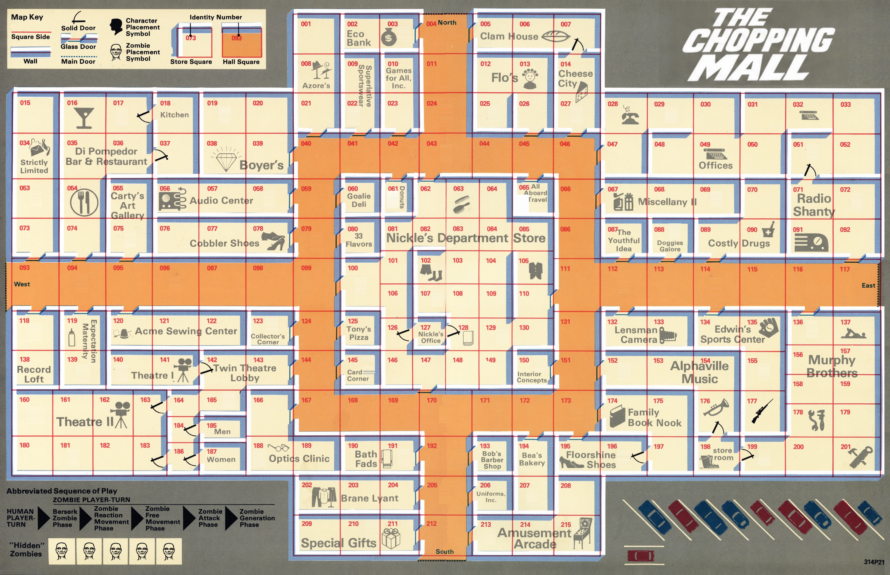

The world outside is gone.Make this place yours.
Lead Peter, Roger, Steve and Fran through a mall full of zombies. Close the four main entrances, arm the survivors and clear the building.
Your game saves automatically on this device.
Select one eligible survivor, or a group sharing a square. Click a highlighted adjacent square to move. Each survivor takes one turn per round. Finish all survivor turns before the zombies act; everyone is ready again next round.
Choose Shoot, then click a zombie in sight. Dice determine whether the shot beats its hidden strength. Shooting nearby enemies may trigger panic. Each survivor has a limited Fire Rate.
Close the four main doors at squares 004, 093, 117 and 212. Closing a main door takes a survivor’s entire Movement Allowance. Main doors cannot be reopened.
Reach Edwin’s Sports Center, square 177, and spend a full turn to acquire a hunting rifle. Peter and Roger already have automatic rifles.
Zombies check for berserk status, react to your actions, move, attack, and enter through open main doors. A stunned or infected survivor is especially vulnerable to another attack.
To win, close all main doors, equip Steve and Fran with rifles, and eliminate every zombie. The zombies win if three survivors are lost or become super zombies. If Fran is infected or killed, losing one other survivor is enough.
Starting a new game replaces the game saved on this device.